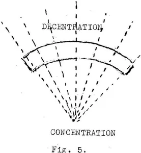
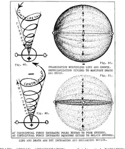

Home Study Course¶
Universal Law, Natural Science and Philosophy — Third Edition (1950–1952) by Walter and Lao Russell

Cover of the GEOMETOR Digital Edition featuring Walter Russell’s Cosmic Clock emblem.¶
Complete digital edition of the 12 Units (48 Lessons) and 102 diagram plates (Figs. 1–180) of Walter and Lao Russell’s Home Study Course in Universal Law, Natural Science and Philosophy, enhanced with GEOMETOR parametric vector reconstructions of the core cosmogonic plates.
Archival Imprint & Emblem (Folio 0002)¶
f. 0002 · p. 2
Prelude: Intimate Home Study Course
These lessons are for the purpose of revealing the nature of God and verifying His Presence as the One Universal Being, through the gradual unfolding of the secret processes of Creation which have until now been unknown to man.

Part I (Lessons 1–4): Meditation Scientifically Explained
Lessons 1–4: Meditation Scientifically Explained.

Part II (Lessons 5–8): Prayer & The Story of My Illumining
Lessons 5–8: Prayer & The Story of My Illumining.
Part III (Lessons 9–12): First Principles & This Sexed Electric Universe
Lessons 9–12: First Principles & This Sexed Electric Universe.

Part IV (Lessons 13–16): Mind, Motion & Man Must Know Man
Lessons 13–16: Mind, Motion & Man Must Know Man.

Part V (Lessons 17–20): The Fulcrum, The Lever & The Mystery of Life and Death
Lessons 17–20: The Fulcrum, The Lever & The Mystery of Life and Death.

Part VI (Lessons 21–24): Deeper Thoughts of Life, Death & Spiritual-Physical Unity
Lessons 21–24: Deeper Thoughts of Life, Death & Spiritual-Physical Unity.

Part VII (Lessons 25–28): Simplicity, Sound, Silence & Wave-Vibrations
Lessons 25–28: Simplicity, Sound, Silence & Wave-Vibrations.

Part VIII (Lessons 29–32): Electric Polarity & Reincarnation
Lessons 29–32: Electric Polarity & Reincarnation.
Part IX (Lessons 33–36): Cosmic Knowledge & The Rise and Fall of Man
Lessons 33–36: Cosmic Knowledge & The Rise and Fall of Man.

Part X (Lessons 37–40): Reincarnation Continued & Multiplication into Transcendent Beings
Lessons 37–40: Reincarnation Continued & Multiplication into Transcendent Beings.

Part XI (Lessons 41–44): Building the Cube-Sphere Wave-Field of Curved Motion
Lessons 41–44: Building the Cube-Sphere Wave-Field of Curved Motion.

Part XII (Lessons 45–48): As on Earth So in Heaven & The Making of Matter
Lessons 45–48: As on Earth So in Heaven & The Making of Matter.
Table of Contents¶
Part I (Lessons 1–4): Meditation Scientifically Explained - Lesson 1: Meditation Scientifically Explained - Lesson 2: Meditation Technique & Creative Consciousness - Lesson 3: Meditation Scientifically Explained (Continued) - Lesson 4: How to Meditate — Questions & Answers
Part II (Lessons 5–8): Prayer & The Story of My Illumining - Lesson 5: Prayer Scientifically Explained & The Power of Prayer - Lesson 6: Prayer and Its Relationship to Meditation - Lesson 7: The Story of My Illumining - Lesson 8: Questions on Meditation, Prayer & Cosmic Consciousness
Part III (Lessons 9–12): First Principles & This Sexed Electric Universe - Lesson 9: First Principles - Lesson 10: This Sexed Electric Universe - Lesson 11: How to Think — Thinking Scientifically Explained - Lesson 12: Answers to Students’ Questions (Part III)
Part IV (Lessons 13–16): Mind, Motion & Man Must Know Man - Lesson 13: Prelude to Mind, Motion & Balance - Lesson 14: How Bodies Are Made and Balanced - Lesson 15: Man Must Know Man - Lesson 16: Answers to Students’ Questions (Part IV)
Part V (Lessons 17–20): The Fulcrum, The Lever & The Mystery of Life and Death - Lesson 17: The Fulcrum and the Lever - Lesson 18: First Steps Toward the Mystery of Life and Death - Lesson 19: Continuing the Mystery of Life and Death - Lesson 20: Students’ Deeper Questions Answered
Part VI (Lessons 21–24): Deeper Thoughts of Life, Death & Spiritual-Physical Unity - Lesson 21: Deeper Thoughts of Life and Death - Lesson 22: Knowledge Makes You the Master of Matter - Lesson 23: Confusion Regarding Spiritual and Physical - Lesson 24: Questions from Students (Part VI)
Part VII (Lessons 25–28): Simplicity, Sound, Silence & Wave-Vibrations - Lesson 25: We Still Search for Simplicity - Lesson 26: Sound, Silence and Wave-Vibrations - Lesson 27: Preface to Vibration, Nebulae & Faith - Lesson 28: Questions on Faith, Belief and Faith Healing
Part VIII (Lessons 29–32): Electric Polarity & Reincarnation - Lesson 29: The Spiritual Significance of Electric Polarity - Lesson 30: Reincarnation - Lesson 31: The Supreme Mystery of the Ages (Reincarnation) - Lesson 32: Answers to Students’ Questions (Part VIII)
Part IX (Lessons 33–36): Cosmic Knowledge & The Rise and Fall of Man - Lesson 33: Knowledge Alone Can Save the Human Race - Lesson 34: The Rise and Fall of Man - Lesson 35: Hard Facts Man Must Face or Perish - Lesson 36: Remedy for World Destruction & Dawn of a New Day
Part X (Lessons 37–40): Reincarnation Continued & Multiplication into Transcendent Beings - Lesson 37: Reincarnation Continued — Unlawful Beliefs - Lesson 38: Spiritual Relations of Man, Woman and Nature - Lesson 39: Multiplication into Transcendent Beings - Lesson 40: Answers to Students’ Questions (Part X)
Part XI (Lessons 41–44): Building the Cube-Sphere Wave-Field of Curved Motion - Lesson 41: Prelude to the Cube-Sphere Wave-Field - Lesson 42: Building the Cube-Sphere Wave-Field - Lesson 43: The Four-Dimensional Cube-Sphere of Curved Motion - Lesson 44: Answers to Students’ Questions (Part XI)
Part XII (Lessons 45–48): As on Earth So in Heaven & The Making of Matter - Lesson 45: Prelude to the Last Four Lessons - Lesson 46: As on Earth So Is It in Heaven - Lesson 47: We Now Consider the Making of Matter - Lesson 48: The Supreme Question and Mystery of Creation